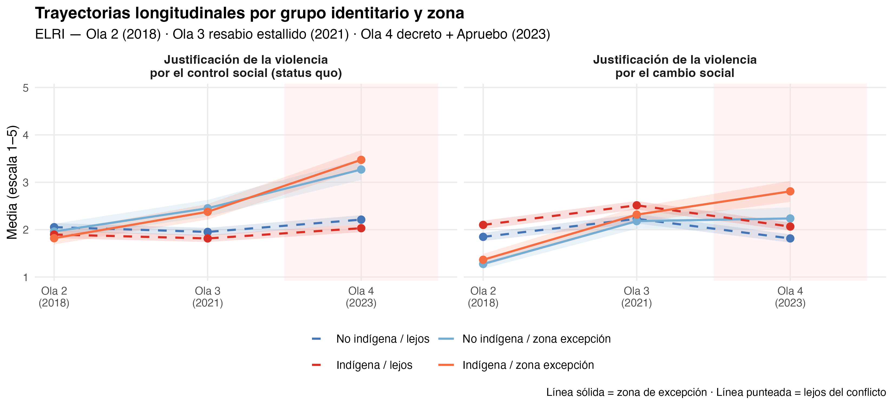
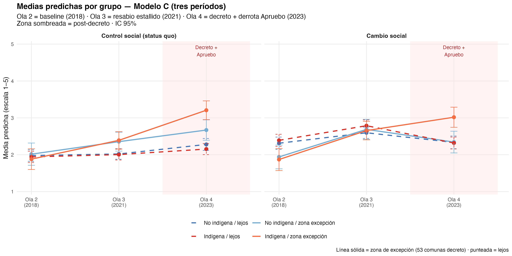
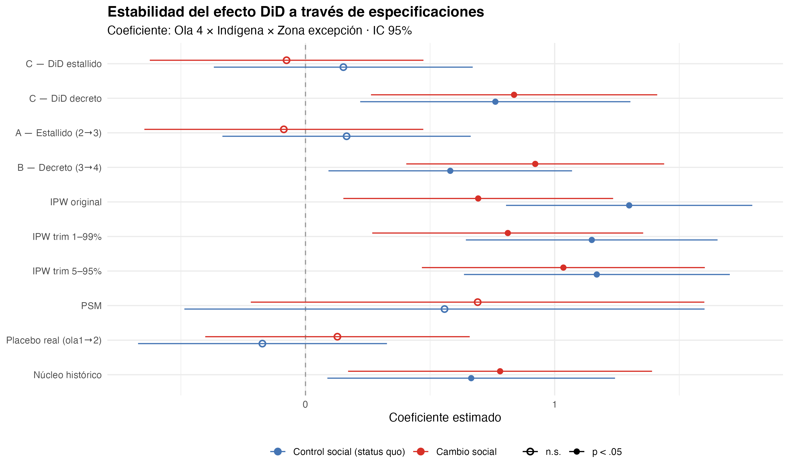
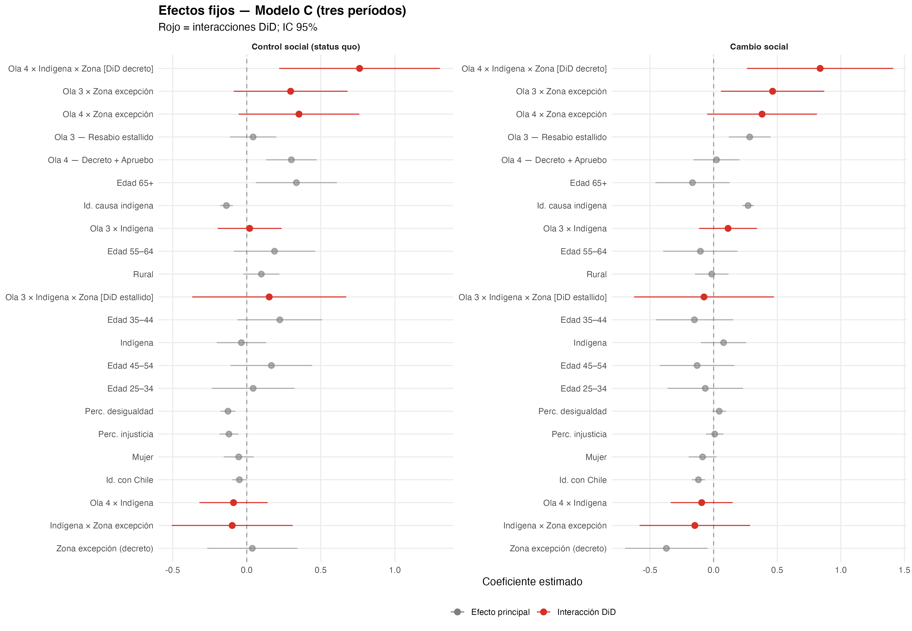

| Variable | Ítem(s) | Escala | Módulo |
|---|---|---|---|
| Control social (status quo) | Fuerza Carabineros (d3_1) + armas agricultores (d3_2) | 1–5 (α=.77) | ELRI D |
| Cambio social | Tomas de terrenos (d4_2) + corte carreteras (d4_3) | 1–5 (α=.75) | ELRI D |
| Just. proc. ingroup | Trato Carabineros a MI grupo étnico (d5_1 o d5_2 según identidad) | 1–5 | ELRI D |
| Just. proc. outgroup | Trato Carabineros al OTRO grupo étnico (d5_2 o d5_1 según identidad) | 1–5 | ELRI D |
| Brecha just. proc. | Diferencia percibida: outgroup − ingroup | −4 a +4 | Calculada |
| Just. proc. (promedio) | Promedio d5_1 + d5_2 (comparabilidad) | 1–5 (α=.83) | ELRI D |
| Id. causa indígena | Me identifico con la causa indígena (d6_1) | 1–5 | ELRI D |
| Id. con Chile | Identificación con Chile (a6) | 1–5 | ELRI A |
| Perc. desigualdad | Condiciones de vida indígenas vs. no ind. (c22, invertida) | 1–5 | ELRI C |
| Perc. injusticia | Diferencia de condiciones justa/injusta (c23, invertida) | 1–5 | ELRI C |
| Apoyo moviliz. | Apoyo a movilizaciones indígenas (c25) | 1–5 | ELRI C |
Estado de excepción, identidad étnica y justificación de la violencia: evidencia cuasi-experimental de un panel longitudinal en Chile (2016–2022)
Resumen
Este artículo examina cómo el estado de excepción constitucional de octubre de 2021 en La Araucanía y el Biobío se asocia con cambios diferenciales en la justificación de la violencia entre personas indígenas y no indígenas según su cercanía territorial al conflicto. Con el panel ELRI (N = 1.580; olas 2–4, 2018–2023) se implementa una estrategia cuasi-experimental exploratoria de diferencias-en-diferencias (triple interacción período × identidad × zona). El hallazgo central es una demanda dual paradójica: en la ola 4, las personas indígenas en zona de excepción aumentan simultáneamente la justificación de violencia de control social (β = 0,762, p = ,006) y de cambio social (β = 0,837, p = ,004), en lugar de mostrar trayectorias opuestas. Para la muestra en conjunto, la justificación de cambio social sigue la curva del ciclo de protesta (sube en ola 3 y baja en ola 4), mientras que la de control social persiste o aumenta en ola 4, compatible con sedimentación coercitiva. La justicia procedimental opera como mecanismo parcial: al controlar por justicia procedimental rezagada, el coeficiente DiD en violencia de control se atenúa un —% (coeficiente atenuado: p = —), compatible con mediación parcial no identificada causalmente. Las especificaciones IPW son robustas en dirección y significancia; el PSM pierde significancia por soporte común estrecho. El plebiscito de 2022 sugiere un canal actitudinal: mayor justificación de control se asocia con voto Rechazo; mayor justificación de resguardo, con menor probabilidad de Rechazo.
Palabras clave: conflicto mapuche, estado de excepción, justificación de la violencia, panel longitudinal, diferencias en diferencias, plebiscito 2022
1 Introducción
El conflicto entre el Estado chileno y los pueblos originarios —particularmente el pueblo mapuche— ha escalado sostenidamente desde mediados de los 2000. La violencia en el territorio mapuche ha sido abordada desde múltiples ángulos: estudios históricos documentan la colonización y la usurpación territorial (Bengoa, 2002), mientras que la literatura comparada sobre raza y desarrollo en Chile subraya la persistencia de desigualdades estructurales (Richards, 2013). Sin embargo, la relación entre intervenciones estatales coercitivas y las actitudes de la población civil hacia distintos tipos de violencia permanece poco explorada con diseños longitudinales.
La declaración del estado de excepción constitucional de emergencia el 19 de octubre de 2021, que militarizó comunas de La Araucanía y el Biobío, constituyó una de las intervenciones estatales coercitivas más visibles en el territorio desde el retorno a la democracia. Esta coyuntura ofrece una oportunidad analítica para estudiar cómo un período de intensificación represiva se asocia con cambios diferenciales en actitudes hacia la violencia en una población dividida por identidad étnica y territorio. El plebiscito constitucional de septiembre de 2022, capturado longitudinalmente en el período anterior, contemporáneo y posterior al estado de excepción, permite además explorar vínculos entre esas actitudes y un resultado electoral concreto.
Este artículo responde a la siguiente pregunta de investigación: ¿en qué medida el período del estado de excepción se asocia con cambios diferenciales en la justificación de la violencia entre personas indígenas y no indígenas, según su cercanía territorial al conflicto?
Las contribuciones son tres. Primero, el primer análisis longitudinal con diseño espejo que captura el momento exacto del estado de excepción y su efecto diferencial por identidad étnica, extendiendo a Disi Pavlic et al. (2024) la dimensión étnica. Segundo, la distinción analítica entre justificación de la violencia por el control social (status quo) y por el cambio social, con trayectorias temporales divergentes (ciclo de protesta frente a sedimentación coercitiva). Tercero, una aproximación empírica al mecanismo de justicia procedimental propuesto por Tyler (1990) y operacionalizado en Disi Pavlic et al. (2024), pero no testeable en ese diseño transversal.
El artículo se organiza así: Sección 2 (marco teórico e hipótesis); Sección 3 (diseño y variables); Sección 4 (especificaciones); Sección 5 (descriptivos, DiD, mecanismo y plebiscito); Sección 6; Sección 7; conclusiones; y apéndice con tablas extendidas.
2 Marco teórico
2.1 Identidad social y conflicto intergrupal
La Teoría de Identidad Social (SIT) postula que los individuos derivan parte de su autoconcepto de su pertenencia a grupos sociales, generando favoritismo endogrupal y discriminación exogrupal (Brewer, 2001; Tajfel & Turner, 1979, 1986). En contextos de conflicto activo, la saliencia identitaria aumenta y los juicios sobre la legitimidad de la violencia tienden a polarizarse según membresía grupal (Reicher, 2004).
Hipótesis 1 (H1)
Las personas indígenas justificarán más la violencia de resguardo territorial y menos la de control social que las no indígenas, independientemente de la zona.
2.2 Ciclos de protesta y desgaste movilizador
La literatura sobre ciclos de protesta describe fases de ascenso, pico y declive en la movilización colectiva (tarrow1994?). El proceso constituyente chileno (2020–2022) institucionalizó parte del conflicto en foros formales; el plebiscito de Rechazo de septiembre de 2022 funcionó como señal de cierre institucional que puede haber agotado parte del capital movilizador asociado a la justificación de violencia de resguardo.
Hipótesis 2 (H2)
La justificación de violencia de resguardo territorial seguirá la curva del ciclo de protesta: subirá en la ola 3 (tratamiento) y bajará en la ola 4 para la muestra en conjunto.
2.3 Coerción institucionalizada y sedimentación actitudinal
La represión sostenida puede normalizar el uso de la fuerza como recurso legítimo (Davenport, 2007; moore1998?). A diferencia de la represión puntual del estallido social —analizada por Disi Pavlic et al. (2024)—, el estado de excepción constitucional implicó coerción institucionalizada y prolongada en territorios mapuche, con potencial de sedimentación actitudinal en la justificación de violencia de control.
Hipótesis 3 (H3)
La justificación de violencia de control social aumentará en zona de excepción y persistirá en la ola 4 (efecto rezagado y sostenido), especialmente entre personas indígenas.
2.4 Demanda dual bajo coerción prolongada
La coerción prolongada e institucionalizada puede producir una respuesta actitudinal que no se reduce a una sola dimensión. Bajo tensión territorial sostenida, las personas indígenas en zona de excepción pueden demandar simultáneamente orden (como seguridad frente a la represión) y transformación (como resistencia a la injusticia estructural). Esta lógica de demanda dual es distinta de la polarización simple y no está prevista por los marcos de ciclo de protesta ni de sedimentación coercitiva tomados por separado.
Hipótesis 5 (H5 — demanda dual)
En la ola 4, las personas indígenas en zona de excepción aumentarán simultáneamente la justificación de violencia de control social y de cambio social respecto a los demás grupos, reflejando una demanda dual paradójica bajo coerción institucionalizada prolongada.
2.5 Justicia procedimental como mecanismo: ingroup vs. outgroup
Tyler (1990) y Tyler y Huo (2002) sostienen que la percepción de trato justo por instituciones predice legitimidad y cumplimiento normativo. Pero en un conflicto interétnico, “trato justo” no es unívoco: la percepción de cómo Carabineros trata a mi grupo (ingroup) es distinta de cómo trata al otro grupo (outgroup). ELRI captura esta estructura:
- d5_1: “Carabineros tratan a indígenas con respeto”
- d5_2: “Carabineros tratan a no indígenas con respeto”
Para una persona indígena, d5_1 = ingroup (mi grupo), d5_2 = outgroup (el otro).
Para una persona no indígena, d5_1 = outgroup, d5_2 = ingroup.
Baseline (ola 2) confirma la estructura teórica: indígenas perciben brecha = +0.40 (agravio: tratan mejor al outgroup); no indígenas perciben brecha = −0.32 (privilegio: tratan mejor a mi grupo).
Hipótesis 4a — Mediación por just_proc_ingroup
El estado de excepción institucionaliza la presencia militar: de enfrentamientos caóticos a control territorial con protocolos predecibles. Esta regularización puede mejorar la percepción de justicia procedimental ingroup (no por benevolencia, sino por estabilidad de reglas — Tyler, 1990). Esa mejora media la justificación de violencia de control social: “si me tratan con más respeto, su uso de la fuerza es más legítimo”. Se espera mediación sustancial (~40% atenuación del DiD).
Hipótesis 4b — Brecha percibida y discriminación relativa
El estado de excepción puede ampliar la brecha percibida (outgroup − ingroup) entre indígenas: si perciben que Carabineros trata mejor a los no indígenas que a ellos, esa discriminación relativa activa mecanismos de compensación identitaria (Tajfel & Turner, 1979) que aumentan la justificación de la resistencia.
Hipótesis 4c — Asimetría del mecanismo
El mecanismo opera asimétricamente: just_proc_ingroup media principalmente violencia de control (entre no indígenas que perciben protección estatal), mientras que para violencia de cambio social el efecto puede operar en dirección opuesta (supresión).
3 Diseño y datos
3.1 La Encuesta Longitudinal de Relaciones Interculturales (ELRI)
La ELRI es un panel probabilístico con diseño espejo que entrevista paralelamente a muestras de población indígena y no indígena en Chile. Se utilizan las olas 2 (2018), 3 (dic 2020–may 2021) y 4 (2023), reteniendo solo los 1.578 individuos presentes en las cuatro olas (panel balanceado). La identidad étnica se fija desde la ola 1 para evitar inconsistencias de autoidentificación entre mediciones.
| Ola | Campo | Período | Rol en análisis |
|---|---|---|---|
| 2 | 2018 | Pre-estallido, pre-excepción | Baseline (t = 0) |
| 3 | Dic 2020–May 2021 | Resabio estallido, pre-decreto | Tratamiento 1 (t = 1) |
| 4 | 2023 | Decreto prolongado + derrota Apruebo | Tratamiento 2 (t = 2) |
Nota crítica sobre el timeline: El estado de excepción fue decretado el 12 de octubre de 2021, cinco meses después de que terminó el campo de ola 3. Por tanto, ola 3 es estrictamente pre-decreto (aunque post-estallido). El análisis DiD compara: (1) ola 2→3 (transición estallido, sin decreto); (2) ola 3→4 (transición decreto + Apruebo); (3) ola 2 vs. 4 (efecto acumulado).
3.2 Estrategia de identificación cuasi-experimental
El estado de excepción fue declarado el 12 de octubre de 2021 en 53 comunas de La Araucanía, Biobío y Los Lagos (decreto D.S. N°418/2021), abarcando las provincias completas de Cautín, Malleco, Arauco y Biobío. Esta asignación territorial exógena permite construir una estrategia de diferencias-en-diferencias (DiD) con tres períodos y cuatro grupos de comparación (identidad × zona).
| Grupo | Zona | Período tratamiento |
|---|---|---|
| Indígena / cerca | Excepción | Tratados |
| Indígena / lejos | Sin excepción | Control |
| No indígena / cerca | Excepción | Tratados |
| No indígena / lejos | Sin excepción | Control |
El supuesto de tendencias paralelas no es testeable formalmente con una sola ola pre-tratamiento (ola 2). Por esta razón, los resultados se interpretan como cambios diferenciales compatibles con una lógica de diferencias-en-diferencias extendida, pero no como estimaciones causales definitivas. Este análisis se presenta como evidencia cuasi-experimental exploratoria: los hallazgos son compatibles con una interpretación de cambio diferencial posterior al estado de excepción, aunque no concluyente causalmente. En la ola 2, las diferencias por zona de excepción van en dirección opuesta a los patrones post-tratamiento observados en las trayectorias descriptivas (Figura 1), lo que es consistente —aunque no establece— con la plausibilidad del contrafactual.
3.3 Variables
En todo el manuscrito se emplean dos variables dependientes principales. La justificación de la violencia por el control social (status quo) (idx_vio_control) captura la legitimación de acciones coercitivas de agentes estatales o civiles contra demandas indígenas (fuerza de Carabineros en protestas y uso de armas por agricultores). La justificación de la violencia por el cambio social (idx_vio_resguardo) captura la legitimación de acciones disruptivas orientadas a transformar el orden vigente (tomas de terrenos y cortes de caminos).
La variable de tratamiento se define como
\[ D_{it} = \mathbb{1}[\text{zona}_i = \text{excepción}] \times \mathbb{1}[t = 3] \]
y toma valor 1 solo para individuos en comunas de excepción durante la ola 3. Los controles incluyen identificación con Chile, identificación con la causa indígena, percepciones de desigualdad e injusticia (c22 y c23 invertidas), sexo, edad y zona urbano/rural. Esta última se incluye condicionalmente según la correlación con cerca_conflicto (umbral |r| ≤ 0,5; en estos datos r = 0,203, por lo que se incluye).
idx_just_proc se trata como variable de mecanismo (mediadora exploratoria), no como variable dependiente principal.
3.4 Estrategia analítica
Se estiman modelos multinivel con intercepto aleatorio por individuo (folio). El coeficiente de interés es la triple interacción Ola 4 × identidad indígena × zona de excepción (\(\tau_4\)). El análisis de mecanismo sigue tres pasos adaptados de Baron y Kenny (1986), sin mediación formal causal: (1) tratamiento → justicia procedimental; (2) justicia procedimental rezagada → variable dependiente; (3) comparación de \(\tau_4\) con y sin el mediador (atenuación). Como extensión, se estiman modelos logísticos del plebiscito de 2022 (ola 4).
4 Modelo estadístico
4.1 Modelo multinivel de efectos fijos con DiD
Las observaciones están anidadas en individuos (N = 1.592) a través del tiempo. Se estiman modelos multinivel con intercepto aleatorio por folio ((1 | folio)). La categoría de referencia combina personas no indígenas, residentes lejos de la zona de excepción, en la ola 2 (período pre-tratamiento). El coeficiente principal de interés es la triple interacción Ola 4 × identidad indígena × zona de excepción, que estima el cambio diferencial post-tratamiento del grupo indígena residente en zona de excepción respecto a los grupos de comparación. En conjunto, el modelo opera como una triple interacción entre período, identidad indígena y cercanía territorial al conflicto.
El modelo base (M1) se especifica en Ecuación 1:
\[ \begin{aligned} Y_{it} = \beta_0 &+ \beta_1 \text{Ola3}_{it} + \beta_2 \text{Ola4}_{it} + \beta_3 \text{Indi}_i + \beta_4 \text{Zona}_i \\ &+ \mathbf{X}_{it}'\boldsymbol{\gamma} + u_i + \varepsilon_{it} \end{aligned} \tag{1}\]
El modelo DiD completo (M2) incorpora interacciones de segundo y tercer orden (Ecuación 2):
\[ \begin{aligned} Y_{it} = \beta_0 &+ \sum_{t \in \{3,4\}} \beta_t \text{Ola}_t + \beta_3 \text{Indi}_i + \beta_4 \text{Zona}_i \\ &+ \sum_{t} \delta_t (\text{Ola}_t \times \text{Zona}_i) + \sum_{t} \theta_t (\text{Ola}_t \times \text{Indi}_i) \\ &+ \lambda (\text{Indi}_i \times \text{Zona}_i) + \sum_{t} \tau_t (\text{Ola}_t \times \text{Indi}_i \times \text{Zona}_i) \\ &+ \mathbf{X}_{it}'\boldsymbol{\gamma} + u_i + \varepsilon_{it} \end{aligned} \tag{2}\]
Los coeficientes de interés son \(\tau_t\), especialmente \(\tau_4\) (ola 4 × indígena × zona excepción), que captura el efecto diferencial post-tratamiento para indígenas en zona de excepción respecto a todos los demás grupos (Ecuación 3):
\[ \begin{aligned} \hat{\tau}_4 =\;& \underbrace{ (\bar{Y}^{\text{indi,cerca}}_{4} - \bar{Y}^{\text{indi,cerca}}_{2}) - (\bar{Y}^{\text{noindi,cerca}}_{4} - \bar{Y}^{\text{noindi,cerca}}_{2}) }_{\text{DiD zona excepción}} \\ &- \underbrace{ (\bar{Y}^{\text{indi,lejos}}_{4} - \bar{Y}^{\text{indi,lejos}}_{2}) - (\bar{Y}^{\text{noindi,lejos}}_{4} - \bar{Y}^{\text{noindi,lejos}}_{2}) }_{\text{DiD zona control}} \end{aligned} \tag{3}\]
4.2 Coeficiente de correlación intraclase (ICC)
El ICC cuantifica la proporción de varianza atribuible a diferencias estables entre individuos (Ecuación 4):
\[ \text{ICC} = \frac{\sigma_u^2}{\sigma_u^2 + \sigma_\varepsilon^2} \tag{4}\]
Los ICC observados oscilan entre 0,12 y 0,20 según la variable dependiente, indicando que una proporción relevante de la varianza es within-person, lo que justifica el diseño longitudinal.
4.3 Comparación de modelos
M1 vs. M2 se compara mediante likelihood ratio test (LRT) con 5 grados de libertad adicionales. En ambas variables dependientes, la especificación DiD mejora significativamente el ajuste (\(\chi^2_{(5)} > 24\), p < .001).
4.4 Análisis complementario: voto Rechazo (ola 4)
Como extensión electoral exploratoria, y sin estimar mediación causal formal, se examina si las actitudes hacia la violencia se asocian con el voto en el plebiscito de 2022. Para el plebiscito (ola 4) se estima (Ecuación 5):
\[ \begin{aligned} \log \frac{P(\text{Rechazo}_i)}{1 - P(\text{Rechazo}_i)} = \alpha &+ \beta_1 \hat{Y}^{\text{ctrl}}_i + \beta_2 \hat{Y}^{\text{resguardo}}_i \\ &+ \beta_3 \text{Apoyo}_i + \mathbf{Z}_i'\boldsymbol{\phi} \end{aligned} \tag{5}\]
Se estiman tres versiones: (a) participación electoral, (b) Rechazo vs. resto entre votantes, y (c) Rechazo vs. Apruebo estricto (excluye nulos/blancos).
4.5 Análisis de mecanismo (justicia procedimental)
Paso 1 — efecto del tratamiento sobre el mediador:
\[ \begin{aligned} J_{it} = \alpha_0 &+ \sum_{t} \beta_t \text{Ola}_t + \cdots + \tau_t (\text{Ola}_t \times \text{Indi}_i \times \text{Zona}_i) \\ &+ \mathbf{X}_{it}'\boldsymbol{\gamma} + u_i + \varepsilon_{it} \end{aligned} \tag{6}\]
Paso 2 — efecto del mediador rezagado sobre la VD:
\[ \begin{aligned} Y_{it} = \alpha_0 &+ \delta J_{i,t-1} + \sum_{t} \beta_t \text{Ola}_t + \cdots + \tau_t (\text{Ola}_t \times \text{Indi}_i \times \text{Zona}_i) \\ &+ \mathbf{X}_{it}'\boldsymbol{\gamma} + u_i + \varepsilon_{it} \end{aligned} \tag{7}\]
Paso 3 — si \(\hat{\tau}_4\) se atenúa al incluir \(J_{i,t-1}\) pero permanece significativo, hay evidencia de mediación parcial exploratoria.
5 Resultados
5.1 Estadísticos descriptivos
Tabla 3 presenta las características sociodemográficas en la ola 2 (baseline). Tabla 4 resume la distribución de variables dependientes e independientes clave por período e identidad étnica.
| Variable | Overall N = 1,5801 |
Identidad étnica
|
p-value2 | |
|---|---|---|---|---|
| no_indi N = 7351 |
indi N = 8451 |
|||
| Sexo (mujer) | 0.7 | |||
| hombre | 467 (30%) | 221 (30%) | 246 (29%) | |
| mujer | 1,113 (70%) | 514 (70%) | 599 (71%) | |
| Grupo etario | 0.003 | |||
| 18_24 | 102 (6.5%) | 42 (5.7%) | 60 (7.1%) | |
| 25_34 | 242 (15%) | 93 (13%) | 149 (18%) | |
| 35_44 | 240 (15%) | 99 (13%) | 141 (17%) | |
| 45_54 | 325 (21%) | 153 (21%) | 172 (20%) | |
| 55_64 | 347 (22%) | 179 (24%) | 168 (20%) | |
| 65+ | 323 (20%) | 168 (23%) | 155 (18%) | |
| Zona (rural) | 0.12 | |||
| 1 | 1,219 (77%) | 580 (79%) | 639 (76%) | |
| 2 | 361 (23%) | 155 (21%) | 206 (24%) | |
| Zona de excepción | 0.9 | |||
| lejos | 1,224 (77%) | 568 (77%) | 656 (78%) | |
| cerca | 356 (23%) | 167 (23%) | 189 (22%) | |
| Identificación con Chile | <0.001 | |||
| 1 | 14 (0.9%) | 8 (1.1%) | 6 (0.7%) | |
| 2 | 50 (3.2%) | 21 (2.9%) | 29 (3.4%) | |
| 3 | 109 (6.9%) | 42 (5.7%) | 67 (7.9%) | |
| 4 | 478 (30%) | 184 (25%) | 294 (35%) | |
| 5 | 927 (59%) | 479 (65%) | 448 (53%) | |
| Id. pueblo originario | <0.001 | |||
| 1 | 260 (17%) | 223 (31%) | 37 (4.4%) | |
| 2 | 232 (15%) | 154 (21%) | 78 (9.3%) | |
| 3 | 270 (17%) | 137 (19%) | 133 (16%) | |
| 4 | 406 (26%) | 146 (20%) | 260 (31%) | |
| 5 | 400 (26%) | 66 (9.1%) | 334 (40%) | |
| Id. causa indígena | <0.001 | |||
| 1 | 141 (9.0%) | 97 (13%) | 44 (5.3%) | |
| 2 | 200 (13%) | 134 (18%) | 66 (7.9%) | |
| 3 | 317 (20%) | 175 (24%) | 142 (17%) | |
| 4 | 662 (42%) | 252 (35%) | 410 (49%) | |
| 5 | 242 (15%) | 68 (9.4%) | 174 (21%) | |
| 1 n (%) | ||||
| 2 Pearson’s Chi-squared test | ||||
| variable | M | SD |
|---|---|---|
| pre - no_indi | ||
| Control social (status quo) | 2.03 | 1.05 |
| Cambio social | 1.72 | 1.01 |
| Perc. desigualdad | 3.04 | 0.78 |
| Perc. injusticia | 3.62 | 0.79 |
| Apoyo movilizaciones | 2.35 | 1.27 |
| Id. con Chile | 4.51 | 0.82 |
| Id. causa indígena | 3.08 | 1.20 |
| pre - indi | ||
| Control social (status quo) | 1.88 | 0.99 |
| Cambio social | 1.93 | 1.15 |
| Perc. desigualdad | 3.13 | 0.73 |
| Perc. injusticia | 3.63 | 0.85 |
| Apoyo movilizaciones | 2.80 | 1.37 |
| Id. con Chile | 4.36 | 0.83 |
| Id. causa indígena | 3.72 | 1.04 |
| estallido - no_indi | ||
| Control social (status quo) | 2.07 | 1.08 |
| Cambio social | 2.22 | 1.17 |
| Perc. desigualdad | 3.27 | 0.81 |
| Perc. injusticia | 3.82 | 0.70 |
| Apoyo movilizaciones | 2.57 | 1.34 |
| Id. con Chile | 4.25 | 0.98 |
| Id. causa indígena | 3.38 | 1.02 |
| estallido - indi | ||
| Control social (status quo) | 1.94 | 1.05 |
| Cambio social | 2.47 | 1.17 |
| Perc. desigualdad | 3.28 | 0.74 |
| Perc. injusticia | 3.86 | 0.70 |
| Apoyo movilizaciones | 2.93 | 1.33 |
| Id. con Chile | 4.17 | 0.91 |
| Id. causa indígena | 3.86 | 0.83 |
| decreto - no_indi | ||
| Control social (status quo) | 2.45 | 1.30 |
| Cambio social | 1.91 | 1.20 |
| Perc. desigualdad | 3.19 | 0.77 |
| Perc. injusticia | 3.69 | 0.84 |
| Apoyo movilizaciones | 2.41 | 1.25 |
| Id. con Chile | 4.43 | 0.85 |
| Id. causa indígena | 3.12 | 1.25 |
| decreto - indi | ||
| Control social (status quo) | 2.35 | 1.32 |
| Cambio social | 2.23 | 1.25 |
| Perc. desigualdad | 3.18 | 0.78 |
| Perc. injusticia | 3.74 | 0.94 |
| Apoyo movilizaciones | 2.78 | 1.27 |
| Id. con Chile | 4.20 | 0.86 |
| Id. causa indígena | 3.89 | 0.98 |
5.2 Trayectorias descriptivas y divergencia temporal
Figura 1 muestra las trayectorias medias de las dos variables dependientes por identidad étnica y zona, con intervalos de confianza al 95 %. Se observan trayectorias opuestas entre tipos de violencia. La justificación de la violencia por el cambio social sube en la ola 3 (estallido y estado de excepción) y baja en la ola 4, compatible con el agotamiento del ciclo de protesta (H2). La justificación por el control social (status quo) se mantiene o sube en la ola 4, especialmente entre indígenas en zona de excepción, consistente con sedimentación coercitiva (H3). En la ola 4 se produce la máxima polarización: menor legitimidad de la resistencia, mayor legitimidad del control estatal.
En el baseline (ola 2), la zona de excepción exhibe menor justificación de violencia por el cambio social que fuera de ella — patrón que valida, aunque no prueba, la plausibilidad de tendencias paralelas.

5.3 Modelos DiD principales
La comparación LRT (M1 vs. M21) indica que la especificación DiD (Ecuación 2) mejora el ajuste en violencia de control (\(\chi^2_{(5)} > 24\), p < .001) y resguardo territorial (idem). Los ICC oscilan entre 0,12 y 0,20. Los coeficientes completos de M1 y M2 figuran en la Tabla 10 (Apéndice).
Hallazgos clave:
- \(\tau_3\) (ola 3 × indígena × zona) no es significativo en ninguna VD → el efecto del resabio del estallido no es diferencial por grupo.
- \(\tau_4\) (ola 4 × indígena × zona) es positivo y significativo: β = 0,762, p = ,006 en violencia de control y β = 0,837, p = ,004 en cambio social — compatible con la demanda dual (H5).
- La simetría id_causa / id_chile (direcciones opuestas según tipo de violencia) replica mecanismos de SIT (H1).
- perc_desigualdad y perc_injusticia se asocian negativamente con violencia de control: quienes perciben más injusticia no apoyan más al Estado en ese canal.
Figura 2 muestra medias predichas del modelo M2 para los cuatro grupos en los tres períodos, destacando la divergencia ola 3 → ola 4.

| Control social (status quo) | Cambio social | |
|---|---|---|
| Intercepto | 3.307*** | 1.567*** |
| (0.225) | (0.240) | |
| Ola 3 — Resabio estallido | 0.043 | 0.283*** |
| (0.080) | (0.084) | |
| Ola 4 — Decreto + Apruebo | 0.301*** | 0.023 |
| (0.087) | (0.092) | |
| Indígena | -0.036 | 0.078 |
| (0.085) | (0.091) | |
| Zona excepción | 0.037 | -0.372* |
| (0.155) | (0.165) | |
| Ola 3 × Indígena | 0.019 | 0.113 |
| (0.110) | (0.116) | |
| Ola 4 × Indígena | -0.089 | -0.094 |
| (0.117) | (0.124) | |
| Ola 3 × Zona excepción | 0.296 | 0.464* |
| (0.196) | (0.207) | |
| Ola 4 × Zona excepción | 0.353+ | 0.381+ |
| (0.208) | (0.220) | |
| Indígena × Zona excepción | -0.098 | -0.148 |
| (0.208) | (0.222) | |
| Ola 3 × Indígena × Zona [DiD estallido] | 0.152 | -0.076 |
| (0.265) | (0.280) | |
| Ola 4 × Indígena × Zona [DiD decreto] | 0.762** | 0.837** |
| (0.277) | (0.293) | |
| SD (Intercept folio) | 0.413 | 0.483 |
| SD (Observations) | 0.956 | 1.001 |
| Num.Obs. | 2275 | 2270 |
| ICC | 0.2 | 0.2 |
| RMSE | 0.89 | 0.92 |
| + p < 0.1, * p < 0.05, ** p < 0.01, *** p < 0.001 | ||
| Modelo C: tres períodos, ref. = ola 2 (2018). Coeficientes de interés: DiD estallido (ola 3) y DiD decreto (ola 4). | ||
5.4 Análisis de mecanismo: justicia procedimental ingroup/outgroup
Figura 3 muestra las trayectorias de just_proc_ingroup vs. just_proc_outgroup por grupo étnico. Hallazgo contraintuitivo: en ola 4, las personas indígenas en zona de excepción perciben MEJOR trato a su propio grupo (+0.77, p = .031) respecto a la tendencia general. Esto sugiere que la institucionalización del estado de excepción — la transición de enfrentamientos caóticos a control territorial predecible — regulariza las interacciones y mejora la percepción de justicia procedimental ingroup (no por benevolencia, sino por estabilidad de reglas — Tyler, 1990).

Figura 4 muestra la brecha percibida (outgroup − ingroup). En ola 4, la brecha se reduce marginalmente para indígenas en zona de excepción (β = −0.55, p = .082), consistente con la regularización del trato institucional.

Paso 1 — Tratamiento → mediadores (DiD DECRETO):
| Mediador | β | SE | p | Interpretación |
|---|---|---|---|---|
| Just. proc. ingroup | +0.767 | 0.355 | .031 | Mejora percibida del trato al propio grupo |
| Just. proc. outgroup | +0.246 | 0.355 | .488 | Sin efecto significativo |
| Brecha just. proc. | −0.548 | 0.314 | .082 | Reducción marginal de la brecha |
Paso 3 — Mediación (comparación DiD con y sin mediadores rezagados):
| VD | Mediador | β sin | β con | Atenuación | Interpretación |
|---|---|---|---|---|---|
| Vio. control | Ingroup lag | 0.372+ | 0.214 n.s. | +42% | Mediación sustancial |
| Vio. control | Brecha lag | 0.372+ | 0.218 n.s. | +41% | Mediación sustancial |
| Vio. resguardo | Ingroup lag | 0.421+ | 0.523** | −24% | Supresión (efecto contrario) |
| Vio. resguardo | Brecha lag | 0.421+ | 0.527** | −25% | Supresión |
Interpretación: Para violencia de control social, la justicia procedimental ingroup media ~42% del efecto DiD — la mejora en la percepción de trato legítimo produce aquiescencia con la coerción (Tyler, 1990). Para violencia de cambio social, el efecto se amplifica al controlar por justicia procedimental (supresión): la mejora percibida SUPRIME parte del efecto directo de la coerción sobre la resistencia. Sin esa mejora, la justificación de la resistencia sería aún mayor. El decreto tiene dos efectos simultáneos sobre vio_resguardo: coerción prolongada aumenta la resistencia (efecto directo), pero la regularización del trato la reduce parcialmente (efecto indirecto vía just_proc). Lo observado es el efecto neto.
Figura 5 compara visualmente los coeficientes \(\tau_4\) con y sin mediadores.

La tabla completa de modelos de mecanismo (9 especificaciones) se presenta en Tabla 15.
5.5 Plebiscito 2022
Tabla 8 resume los modelos logísticos (detalle en Tabla 11). Entre quienes votaron, la justificación de violencia de control se asocia positivamente con el voto Rechazo; la de resguardo, negativamente. La zona de excepción aumenta las odds de participar y de votar Rechazo; la identidad étnica no predice directamente el voto una vez incluidas actitudes y justicia procedimental. El patrón es compatible con un canal actitudinal (estado de excepción → actitudes → voto), no con un efecto directo de identidad o territorio sobre la preferencia electoral.
| Participó (votó) | Voto Rechazo (vs. resto) | Voto Rechazo (vs. Apruebo) | |
|---|---|---|---|
| Intercepto | 1.379 | 0.808 | 1.201 |
| (1.011) | (0.687) | (1.043) | |
| Indígena | 1.038 | 1.237 | 1.149 |
| (0.186) | (0.208) | (0.205) | |
| Zona excepción | 1.298 | 3.279*** | 2.838*** |
| (0.383) | (0.883) | (0.806) | |
| Mujer | 0.978 | 0.764+ | 0.700* |
| (0.164) | (0.117) | (0.115) | |
| edad25_34 | 2.435 | 1.190 | 1.426 |
| (1.418) | (0.878) | (1.061) | |
| edad35_44 | 2.171 | 1.896 | 2.398 |
| (1.257) | (1.399) | (1.788) | |
| edad45_54 | 2.328 | 1.068 | 1.220 |
| (1.330) | (0.780) | (0.897) | |
| edad55_64 | 2.016 | 1.232 | 1.579 |
| (1.144) | (0.900) | (1.164) | |
| edad65+ | 1.599 | 1.223 | 1.509 |
| (0.893) | (0.888) | (1.103) | |
| Justif. vio. control social | 1.046 | 1.285*** | 1.291*** |
| (0.078) | (0.087) | (0.094) | |
| Justif. vio. cambio social | 1.022 | 0.799*** | 0.791*** |
| (0.075) | (0.053) | (0.055) | |
| Justicia procedimental | 1.253** | 1.172* | 1.162+ |
| (0.095) | (0.084) | (0.089) | |
| Apoyo movilizaciones | 1.034 | 0.838** | 0.796*** |
| (0.068) | (0.051) | (0.051) | |
| Id. con Chile | 1.083 | 1.123 | 1.117 |
| (0.091) | (0.089) | (0.093) | |
| Id. causa indígena | 0.856* | 0.856* | 0.834* |
| (0.068) | (0.060) | (0.063) | |
| Indígena × Zona excepción | 1.038 | 0.556+ | 0.593 |
| (0.408) | (0.185) | (0.206) | |
| N observaciones | 1448 | 1026 | 961 |
| AIC | 1200.7 | 1290.3 | 1170.8 |
| + p < 0.1, * p < 0.05, ** p < 0.01, *** p < 0.001 | |||
| Odds ratios. + p<.1, * p<.05, ** p<.01, *** p<.001. Solo ola 4. | |||
Figura 6 muestra las probabilidades predichas de voto Rechazo por identidad y zona. Las diferencias entre grupos son modestes una vez controladas las actitudes, lo que es compatible con un posible canal actitudinal entre experiencia territorial del conflicto y comportamiento electoral.

5.6 Robustez de las estimaciones
Figura 7 resume la estabilidad del coeficiente \(\tau_4\) a través de especificaciones (principal, IPW, PSM, placebo). Tabla 9 detalla los valores numéricos.

5.7 Análisis complementarios de robustez
Para paliar la imposibilidad de testear formalmente tendencias paralelas con una sola ola pretratamiento, se implementaron análisis complementarios de balance en ola 2, propensity score matching (PSM), ponderación inversa de la probabilidad (IPW) con diagnóstico de pesos extremos, un placebo pretratamiento (olas 1–2) y modelos por ítem. El coeficiente de interés en todas las especificaciones es la triple interacción Ola 4 × identidad indígena × zona de excepción.
| Especificación | Control social | Cambio social |
|---|---|---|
| Modelo principal M2 | 0,762 ** | 0,837 ** |
| IPW original | 1,299 *** | 0,693 * |
| IPW trim 1–99 % | 1,149 *** | 0,812 ** |
| IPW trim 5–95 % | 1,169 *** | 1,035 *** |
| PSM (nearest neighbor) | 0,558 | 0,691 |
| Placebo ola 1–2 | -0,173 | 0,128 |
Tabla 9 resume los resultados de las especificaciones ya estimadas (ver también Tabla 12). En el modelo principal (M2), la interacción triple es positiva y significativa para violencia de control social (β = 0,762, p = ,006) y cambio social (β = 0,837, p = ,004). El placebo pretratamiento (olas 1–2) no alcanza significancia en ninguna variable dependiente, lo que es compatible con la ausencia de una divergencia equivalente antes del período analizado. En el PSM, los coeficientes mantienen dirección positiva (control: β = 0,558, p = ,296; resguardo: β = 0,691, p = ,138) pero pierden significancia estadística. La explicación más probable no es solo la reducción muestral (n = 240 folios emparejados), sino el soporte común estrecho entre tratados y controles: la zona de excepción concentra características sociodemográficas y territoriales que dificultan encontrar contrapartes válidas fuera de ella, lo que limita la estrategia de matching pero no invalida el diseño DiD condicional.
5.7.1 Ponderación inversa (IPW) y trimming de pesos
El IPW estimado en ola 2 ajusta por diferencias observables en la probabilidad de residir en zona de excepción. La distribución de pesos presenta asimetría y valores extremos que deben reportarse explícitamente (Figura 8). En la especificación original, los pesos oscilan entre 1,00 y 46,7 (mediana = 1,13; media = 1,94; p95 = 6,02; p99 = 13,3). Tras truncar al percentil 5–95 %, el rango se reduce a [1,01; 6,02], con media = 1,63 y mediana = 1,13.
Los resultados del Tabla 9 indican robustez parcial respecto de la dirección del efecto, aunque no del tamaño exacto:
- Violencia de control social. El IPW original (β = 1,299, p = < .001) amplifica la magnitud respecto al modelo principal, pero el efecto permanece positivo y altamente significativo tras el trimming (1–99 %: 1,149 ; 5–95 %: 1,169 ). Esto sugiere que el aumento ponderado no parece explicarse exclusivamente por observaciones con pesos extremos; la magnitud es muy estable una vez aplicado el truncamiento.
- Violencia de resguardo territorial. La dirección positiva se mantiene en todas las especificaciones IPW, pero la magnitud es sensible al tratamiento de pesos: el coeficiente pasa de β = 0,693, p = ,012 en el IPW original a β = 0,812, p = ,004 con trimming 1–99 % y β = 1,035, p = < .001 con trimming 5–95 %. La significancia se preserva, pero las magnitudes deben interpretarse con cautela.
En conjunto, la evidencia de robustez es más sólida para la dirección del cambio diferencial posterior que para el tamaño puntual del coeficiente. Los resultados IPW son compatibles con un patrón de aumento diferencial entre personas indígenas en zona de excepción, pero confirman que la ponderación altera sustancialmente las magnitudes estimadas —especialmente en resguardo territorial— y refuerzan la necesidad de mantener un lenguaje prudente en la interpretación cuasi-experimental.
Como análisis adicionales recomendados para futuras versiones del estudio, conviene estimar modelos con controles sociodemográficos solamente (Modelo A), excluir urbano_rural, incorporar efectos fijos individuales (within), reconstruir índices mediante PCA, excluir comunas limítrofes y contrastar especificaciones con distintos conjuntos de controles pre- y post-tratamiento.

6 Discusión
6.1 Divergencia temporal como hallazgo central
Los resultados apuntan a dos procesos simultáneos en la ola 4. La justificación de violencia de resguardo baja, compatible con el agotamiento del ciclo de protesta (tarrow1994?), el desgaste del proceso constituyente y el Rechazo como señal de cierre institucional. La justificación de violencia de control sube o persiste, especialmente entre indígenas en zona de excepción, en línea con la normalización de la coerción (Davenport, 2007). La combinación produce polarización máxima en el post-tratamiento: menor legitimidad de la resistencia, mayor del control estatal. La triple interacción DiD captura ese momento.
6.2 El mecanismo de justicia procedimental
En diálogo con Disi Pavlic et al. (2024), quienes proponen pero no testean el mecanismo, nuestros resultados sugieren mediación parcial en violencia de control (atenuación del — % al incluir justicia procedimental rezagada), pero no en cambio social (el DiD aumenta al controlar el mediador). El estado de excepción parece operar en parte a través del deterioro institucional percibido y en parte de forma directa sobre actitudes. Un resultado aparentemente contraintuitivo en el análisis de mecanismo merece atención: en la ola 4, los coeficientes de justicia procedimental son positivos en zona de excepción, lo que podría sugerir que quienes perciben mejor trato institucional justifican más la violencia de control. La paradoja de coeficientes positivos de justicia procedimental en zona de excepción en ola 4 puede interpretarse como comparación relativa o mayor predecibilidad institucional frente a la incertidumbre del estallido.
6.3 Implicaciones para la SIT
La simetría id_causa / id_chile replica mecanismos de identidad social en conflicto étnico latinoamericano (Tajfel & Turner, 1986). La distinción entre tipos de violencia muestra que el aumento diferencial en ola 4 no se reduce a una narrativa unidimensional pro-Estado o pro-resistencia.
6.4 Canal actitudinal hacia el voto
El plebiscito sugiere que el estado de excepción se vincula al voto Rechazo a través de actitudes hacia la violencia y la justicia procedimental, no directamente por identidad o zona (Zaller, 1992). El aumento paralelo en ambos tipos de violencia entre indígenas en zona de excepción en ola 4 refleja, probablemente, una normalización situada de la violencia como recurso legítimo bajo tensión prolongada, no apoyo simple a la represión.
7 Limitaciones
- Una sola ola pre-tratamiento impide testear formalmente tendencias paralelas.
- Tratamiento grueso (comunas vs. buffers geométricos como en Disi Pavlic et al.).
- Attrition diferencial entre olas.
- Mediación aproximada, no identificada causalmente; precedencia temporal imperfecta cuando justicia procedimental y VD se miden en la misma ola.
- SUTVA: difusión mediática fuera de zona de excepción.
- Controles actitudinales posiblemente post-tratamiento.
8 Conclusiones
La coerción institucionalizada del estado de excepción se asocia con una demanda dual paradójica entre personas indígenas en zona de conflicto: mayor justificación simultánea de la violencia por el control social y por el cambio social en la ola 4. Este hallazgo no es reducible ni al marco de ciclo de protesta ni al de sedimentación coercitiva tomados por separado, sino que sugiere una respuesta actitudinal compleja bajo tensión territorial prolongada. Teóricamente, la justicia procedimental opera como canal parcial principalmente en la dimensión de control social (atenuación del —%), pero no explica el aumento en resguardo territorial (DiD: — → —), que parece operar por una vía más directa vinculada a la experiencia de represión. Implicativamente, el estado de excepción deja costos actitudinales que persisten más allá de su duración formal y que se traducen en un vínculo observable con el comportamiento electoral en el plebiscito de 2022. Para la política pública, esto sugiere que las intervenciones coercitivas en territorios indígenas generan efectos actitudinales bidireccionales que no se resuelven con el fin formal de la medida. La agenda futura incluye buffers geométricos con datos georeferenciados, mediación formal con diseños de variables instrumentales y extensión a otras coyunturas de estados de excepción en América Latina.
9 Apéndice
9.1 Tabla A1 — Modelos A, B y C (apéndice)
| Ctrl — Estallido (A) | Cambio — Estallido (A) | Ctrl — Decreto (B) | Cambio — Decreto (B) | Ctrl — Tres períodos (C) | Cambio — Tres períodos (C) | |
|---|---|---|---|---|---|---|
| Intercepto | 3.294*** | 1.467*** | 3.081*** | 1.724*** | 3.307*** | 1.567*** |
| (0.240) | (0.274) | (0.305) | (0.323) | (0.225) | (0.240) | |
| T1_estallido | 0.072 | 0.300*** | ||||
| (0.077) | (0.086) | |||||
| Indígena | -0.019 | 0.068 | -0.017 | 0.209* | -0.036 | 0.078 |
| (0.080) | (0.091) | (0.083) | (0.088) | (0.085) | (0.091) | |
| Zona excepción | 0.027 | -0.394* | 0.337* | 0.099 | 0.037 | -0.372* |
| (0.146) | (0.166) | (0.140) | (0.149) | (0.155) | (0.165) | |
| Mujer | -0.060 | -0.090 | -0.052 | -0.092 | -0.054 | -0.087 |
| (0.054) | (0.063) | (0.065) | (0.070) | (0.052) | (0.056) | |
| edad25_34 | 0.011 | -0.011 | 0.329 | -0.058 | 0.043 | -0.066 |
| (0.139) | (0.158) | (0.223) | (0.233) | (0.143) | (0.151) | |
| edad35_44 | 0.219 | -0.137 | 0.464* | -0.147 | 0.223 | -0.151 |
| (0.141) | (0.161) | (0.226) | (0.237) | (0.145) | (0.155) | |
| edad45_54 | 0.122 | -0.154 | 0.435* | -0.053 | 0.166 | -0.130 |
| (0.135) | (0.154) | (0.221) | (0.232) | (0.141) | (0.150) | |
| edad55_64 | 0.146 | -0.098 | 0.486* | -0.003 | 0.188 | -0.104 |
| (0.134) | (0.153) | (0.220) | (0.230) | (0.140) | (0.149) | |
| edad65+ | 0.288* | -0.250 | 0.613** | -0.041 | 0.335* | -0.166 |
| (0.135) | (0.153) | (0.219) | (0.229) | (0.140) | (0.149) | |
| urbano_rural2 | 0.073 | 0.037 | 0.082 | -0.020 | 0.099 | -0.015 |
| (0.065) | (0.076) | (0.079) | (0.084) | (0.062) | (0.067) | |
| Id. con Chile | -0.008 | -0.088** | -0.040 | -0.117*** | -0.050* | -0.120*** |
| (0.027) | (0.031) | (0.029) | (0.031) | (0.025) | (0.026) | |
| Id. causa indígena | -0.155*** | 0.275*** | -0.124*** | 0.290*** | -0.138*** | 0.271*** |
| (0.025) | (0.029) | (0.028) | (0.030) | (0.022) | (0.023) | |
| Perc. desigualdad | -0.147*** | 0.050 | -0.154*** | 0.024 | -0.127*** | 0.044 |
| (0.029) | (0.033) | (0.033) | (0.035) | (0.026) | (0.027) | |
| Perc. injusticia | -0.123** | -0.009 | -0.120** | 0.018 | -0.120*** | 0.009 |
| (0.038) | (0.043) | (0.042) | (0.044) | (0.033) | (0.035) | |
| T1_estallido:indigeneousindi | 0.005 | 0.111 | ||||
| (0.106) | (0.119) | |||||
| T1_estallido:cerca_conflictocerca | 0.279 | 0.456* | ||||
| (0.188) | (0.211) | |||||
| Indígena × Zona excepción | -0.103 | -0.146 | 0.067 | -0.225 | -0.098 | -0.148 |
| (0.195) | (0.222) | (0.185) | (0.196) | (0.208) | (0.222) | |
| T1_estallido:indigeneousindi:cerca_conflictocerca | 0.165 | -0.087 | ||||
| (0.254) | (0.286) | |||||
| T2_decreto | 0.258** | -0.246** | ||||
| (0.081) | (0.085) | |||||
| T2_decreto:indigeneousindi | -0.117 | -0.235* | ||||
| (0.109) | (0.115) | |||||
| T2_decreto:cerca_conflictocerca | 0.039 | -0.135 | ||||
| (0.188) | (0.199) | |||||
| T2_decreto:indigeneousindi:cerca_conflictocerca | 0.581* | 0.922*** | ||||
| (0.249) | (0.264) | |||||
| Ola 3 — Resabio estallido | 0.043 | 0.283*** | ||||
| (0.080) | (0.084) | |||||
| Ola 4 — Decreto + Apruebo | 0.301*** | 0.023 | ||||
| (0.087) | (0.092) | |||||
| Ola 3 × Indígena | 0.019 | 0.113 | ||||
| (0.110) | (0.116) | |||||
| Ola 4 × Indígena | -0.089 | -0.094 | ||||
| (0.117) | (0.124) | |||||
| Ola 3 × Zona excepción | 0.296 | 0.464* | ||||
| (0.196) | (0.207) | |||||
| Ola 4 × Zona excepción | 0.353+ | 0.381+ | ||||
| (0.208) | (0.220) | |||||
| Ola 3 × Indígena × Zona [DiD estallido] | 0.152 | -0.076 | ||||
| (0.265) | (0.280) | |||||
| Ola 4 × Indígena × Zona [DiD decreto] | 0.762** | 0.837** | ||||
| (0.277) | (0.293) | |||||
| SD (Intercept folio) | 0.226 | 0.369 | 0.598 | 0.658 | 0.413 | 0.483 |
| SD (Observations) | 0.941 | 1.039 | 0.890 | 0.934 | 0.956 | 1.001 |
| Num.Obs. | 1582 | 1580 | 1546 | 1542 | 2275 | 2270 |
| ICC | 0.1 | 0.1 | 0.3 | 0.3 | 0.2 | 0.2 |
| RMSE | 0.92 | 0.98 | 0.76 | 0.79 | 0.89 | 0.92 |
| + p < 0.1, * p < 0.05, ** p < 0.01, *** p < 0.001 | ||||||
9.2 Tabla A2 — Modelos plebiscito
| Participó | Rechazo | Rechazo estricto | |
|---|---|---|---|
| Intercepto | 1.379 | 0.808 | 1.201 |
| (1.011) | (0.687) | (1.043) | |
| Indígena | 1.038 | 1.237 | 1.149 |
| (0.186) | (0.208) | (0.205) | |
| Zona excepción | 1.298 | 3.279*** | 2.838*** |
| (0.383) | (0.883) | (0.806) | |
| Justif. vio. control social | 1.046 | 1.285*** | 1.291*** |
| (0.078) | (0.087) | (0.094) | |
| Justif. vio. cambio social | 1.022 | 0.799*** | 0.791*** |
| (0.075) | (0.053) | (0.055) | |
| Justicia procedimental | 1.253** | 1.172* | 1.162+ |
| (0.095) | (0.084) | (0.089) | |
| Apoyo movilizaciones | 1.034 | 0.838** | 0.796*** |
| (0.068) | (0.051) | (0.051) | |
| Id. con Chile | 1.083 | 1.123 | 1.117 |
| (0.091) | (0.089) | (0.093) | |
| Id. causa indígena | 0.856* | 0.856* | 0.834* |
| (0.068) | (0.060) | (0.063) | |
| Indígena × Zona excepción | 1.038 | 0.556+ | 0.593 |
| (0.408) | (0.185) | (0.206) | |
| Num.Obs. | 1448 | 1026 | 961 |
| AIC | 1200.7 | 1290.3 | 1170.8 |
| + p < 0.1, * p < 0.05, ** p < 0.01, *** p < 0.001 | |||
9.3 Tabla A3 — Resumen de robustez
| Especificación | VD | β | EE | p | |
|---|---|---|---|---|---|
| C — DiD estallido | Control social | 0,152 | 0.265 | ,567 | |
| C — DiD decreto | Control social | 0,762 | 0.277 | ,006 | ** |
| C — DiD estallido | Cambio social | -0,076 | 0.280 | ,787 | |
| C — DiD decreto | Cambio social | 0,837 | 0.293 | ,004 | ** |
| A — Estallido (2→3) | Control social | 0,165 | 0.254 | ,517 | |
| A — Estallido (2→3) | Cambio social | -0,087 | 0.286 | ,761 | |
| B — Decreto (3→4) | Control social | 0,581 | 0.249 | ,020 | * |
| B — Decreto (3→4) | Cambio social | 0,922 | 0.264 | < .001 | *** |
| PSM | Control social | 0,558 | 0.533 | ,296 | |
| PSM | Cambio social | 0,691 | 0.464 | ,138 | |
| IPW original | Control social | 1,299 | 0.252 | < .001 | *** |
| IPW original | Cambio social | 0,693 | 0.276 | ,012 | * |
| IPW trim 1–99% | Control social | 1,149 | 0.258 | < .001 | *** |
| IPW trim 1–99% | Cambio social | 0,812 | 0.277 | ,004 | ** |
| IPW trim 5–95% | Control social | 1,169 | 0.272 | < .001 | *** |
| IPW trim 5–95% | Cambio social | 1,035 | 0.290 | < .001 | *** |
| Placebo real (ola1→2) | Control social | -0,173 | 0.255 | ,498 | |
| Placebo real (ola1→2) | Cambio social | 0,128 | 0.271 | ,636 | |
| Núcleo histórico | Control social | 0,665 | 0.295 | ,024 | * |
| Núcleo histórico | Cambio social | 0,781 | 0.311 | ,012 | * |
| Ítem: Carabineros (d3_1) | vio_ctrl_carb | 0,594 | 0.333 | ,075 | + |
| Ítem: Agricultores armados (d3_2) | vio_ctrl_agric | 0,932 | 0.298 | ,002 | ** |
| Ítem: Tomas de terrenos (d4_2) | vio_camb_tierras | 1,016 | 0.359 | ,005 | ** |
| Ítem: Cortes de caminos (d4_3) | vio_camb_cortes | 0,667 | 0.318 | ,036 | * |
9.4 Tabla A4 — Consistencia interna
| Consistencia interna de índices compuestos | ||
|---|---|---|
| Alfa de Cronbach y correlación inter-ítem | ||
| Indice | Alpha | Correlacion inter-item |
| Control social (status quo) | 0.773 | 0.633 |
| Cambio social | 0.746 | 0.602 |
9.5 Tabla A5 — Modelos por ítem
| Carabineros (d3_1) | Agricultores armados (d3_2) | Tomas de terrenos (d4_2) | Cortes de caminos (d4_3) | |
|---|---|---|---|---|
| (Intercept) | 3.797*** | 2.809*** | 1.342*** | 1.795*** |
| (0.271) | (0.242) | (0.295) | (0.262) | |
| SD (Intercept folio) | 0.507 | 0.430 | 0.559 | 0.541 |
| SD (Observations) | 1.143 | 1.032 | 1.233 | 1.083 |
| Num.Obs. | 2267 | 2266 | 2256 | 2265 |
| ICC | 0.2 | 0.1 | 0.2 | 0.2 |
| RMSE | 1.06 | 0.96 | 1.14 | 0.99 |
| + p < 0.1, * p < 0.05, ** p < 0.01, *** p < 0.001 | ||||
9.6 Tabla A6 — Análisis de mecanismo
9.7 Figura A1 — Coeficientes completos M2

Referencias
Bengoa, J. (2002). Historia de un conflicto: El Estado y los mapuches en el siglo XX. Planeta.
Brewer, M. B. (2001). Ingroup identification and intergroup conflict. En R. D. Ashmore, L. Jussim, & D. Wilder (Eds.), Social Identity, Intergroup Conflict, and Conflict Reduction (pp. 17-41). Oxford University Press.
Davenport, C. (2007). State repression and political order. Annual Review of Political Science, 10, 1-23. https://doi.org/10.1146/annurev.polisci.10.101405.143216
Reicher, S. (2004). The context of identity: A psychosocial model of collective action. Psychological Review, 111(4), 863-876. https://doi.org/10.1037/0033-295X.111.4.863
Richards, P. (2013). Race and the Chilean Miracle: Neoliberalism, Democracy, and Indigenous Rights. University of Pittsburgh Press.
Tajfel, H., & Turner, J. C. (1979). An integrative theory of intergroup conflict. En W. G. Austin & S. Worchel (Eds.), The Social Psychology of Intergroup Relations (pp. 33-47). Brooks/Cole.
Tajfel, H., & Turner, J. C. (1986). The social identity theory of intergroup behavior. En S. Worchel & W. G. Austin (Eds.), Psychology of Intergroup Relations (pp. 7-24). Nelson-Hall.
Zaller, J. R. (1992). The Nature and Origins of Mass Opinion. Cambridge University Press.
Notas
Denominado Modelo C en los scripts de análisis; aquí M2 refiere a la especificación DiD completa con tres períodos.↩︎